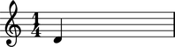

Working with notes
Creating notes
Create notes with numeric pitch and duration indicators.
abjad> note = Note(0, (1, 4))

Changing duration
You can assign values directly to the note duration interface.
abjad> note.duration = (1, 8)
You can use any duration token on the right-hand side of such an assignment.
Changing pitch
You can assign pitches to a note a note in a couple of different ways.
abjad> note.pitch = 1 abjad> note Note(cs', 4)
abjad> note.pitch = Pitch('d', 4)
abjad> note
Note(d', 4)
abjad> note.pitch = ('ds', 4)
abjad> note
Note(ds', 4)
Duration comparisons
Compare note durations with Python's equality operator.
abjad> Note(0, (1, 8)) == Note(0, (3, 8)) False
Greater than, less than and the other comparison operators work as expected.
abjad> Note(0, (1, 8)) < Note(0, (3, 8)) True
You can do all the normal things with the note duration interface that you can do with the other Abjad duration interfaces. These include copying and rewriting.